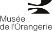

La base Architecture Paris
Le fonds Éric Jantzen
La base Architecture Paris donne accès au fonds photographique constitué par Éric Jantzen et cédé au musée d'Orsay en 2026.
Pendant près de 15 ans, l'architecte, photographe et enseignant a photographié les immeubles de Paris. Le fonds réunit plus de 17 250 photographies, consacrées à des édifices très variés, des immeubles haussmanniens aux architectures plus récentes, en passant par de nombreux détails de façades.
Environ 6 200 photographies concernent des immeubles correspondant à la période couverte par les collections du musée d'Orsay.
Parmi l'ensemble du fonds, [X] photographies sont aujourd'hui publiées sur ce site.
Éric Jantzen
Né le 12 janvier 1942 et diplômé en architecture, Éric Jantzen a consacré sa carrière à l'architecture, à la photographie et à l'enseignement. Il a notamment enseigné à l'École d'architecture de Paris-La Villette et publié deux ouvrages.
Son projet photographique est initialement développé dans le cadre de son enseignement. Les images servent de support à l'observation et à l'étude de l'architecture avant de devenir, au fil des années, un vaste fonds photographique consacré à Paris.
Éric Jantzen connaissait déjà le musée d'Orsay bien avant l'arrivée de son fonds dans l'institution puisqu'il avait photographié la gare d'Orsay en 1972, avant sa transformation en musée.
Photographier Paris
La constitution du fonds repose sur une méthode de travail régulière et planifiée.
Éric Jantzen organisait ses parcours à partir d'un plan de Paris, en définissant pour chaque secteur un itinéraire de rues à photographier. Les conditions météorologiques et la position du soleil entraient dans la préparation des prises de vue, avec l'objectif de photographier les façades dans leur meilleur moment de lumière.
Les images étaient traitées après chaque parcours. Leur examen permettait également d'identifier certains bâtiments à reprendre.
Le matériel photographique et les logiciels employés ont évolué au cours des 15 années de production, accompagnant les différentes étapes du projet.
Décrire et organiser le fonds
Les photographies étaient déjà accompagnées d'un premier ensemble d'informations produit par photographe.
Les noms de fichiers comportent des éléments d'adresse. Un index d'environ 30 termes permet de caractériser les images, tandis que des notes en texte libre indiquent notamment, lorsqu'elles sont connues, la date d'un immeuble et le nom de son architecte.
Le travail documentaire mené pour la mise en ligne a permis de reprendre et de structurer ces informations. Les métadonnées existantes ont été extraites et harmonisées, le vocabulaire du fonds a été nettoyé et les termes ont été rapprochés de définitions de référence.
Les immeubles et les personnes ont également été identifiés et reliés lorsque cela était possible. 950 artistes, architectes, sculpteurs et céramistes associés aux immeubles photographiés ont ainsi été recherchés, 740 ont pu être identifiés avec certitude grâce au croisement de plusieurs ressources, notamment le catalogue du musée d'Orsay, Wikidata et PSS-Archi.
Les prises de vue ont par ailleurs été géolocalisées, afin de permettre une consultation tel que présentée ici.
Les données sont aujourd'hui organisées en 4 ensembles, photographies, immeubles, personnes et thésaurus. Cette structuration permet de relier les images, les bâtiments, les acteurs de leur construction et le vocabulaire utilisé pour les décrire.
Des informations d'origines différentes
Les informations accessibles dans la base ne proviennent pas toutes de la même source.
Certaines sont issues directement du travail d'Éric Jantzen, d'autres résultent de recherches documentaires et d'alignements avec des référentiels externes.
Un second index à été produit et enrichi à l'aide d'outils d'intelligence artificielle dans le cadre du projet TORNE-H. [insérer nom de modèle]
L'origine des informations peut ainsi être distinguée dans la consultation, afin de rendre visible le travail documentaire réalisé autour des photographies.
Conservation et diffusion
Le fonds relève des collections patrimoniales du musée d'Orsay.
Le fonds numérique est conservé par le Service de la Documentation du musée d'Orsay.
Les images diffusées sur ce site sont proposées au format JPG, dans une résolution moyenne, lorsque leur statut de droits permet leur publication.
Le projet TORNE-H
Explorer les usages de l'intelligence artificielle dans les collections patrimoniales
TORNE-H est un projet de recherche consacré à l'usage de l'intelligence artificielle dans les traitements documentaires des collections patrimoniales.
Le projet est porté par le musée des Arts Décoratifs, avec l'École nationale des Chartes-PSL comme partenaire scientifique et la Bibliothèque nationale de France. En 2026, L’Établissement public du musée d'Orsay et du musée de l'Orangerie rejoint le projet par l'intermédiaire du service des données patrimoniales numériques du Centre de ressources et de recherche Daniel Marchesseau.
TORNE-H part d'une question concrète : Comment les outils d'intelligence artificielle peuvent-ils être intégrés au travail documentaire des institutions patrimoniales ?
L'objectif n'est pas seulement de tester des modèles. Il s'agit d'évaluer leur utilité dans des situations de travail réelles, d'identifier leurs possibilités et leurs limites, et de produire des méthodes et des outils pouvant être réutilisés dans d'autres projets.
Une expérimentation menée avec les professionnels
Le projet cherche à rapprocher l'expérimentation technique des besoins des équipes qui travaillent quotidiennement sur les collections.
Il associe ainsi plusieurs types de traitements, enrichissement des métadonnées, analyse automatique des images, alignement avec des référentiels existants, structuration des données et réflexion sur leur valorisation.
Cette approche permet de comparer les résultats produits par l'intelligence artificielle avec ceux obtenus par des méthodes documentaires plus classiques.
Le projet s'intéresse également aux conditions concrètes d'utilisation de ces outils. Quels résultats peuvent être exploités ? Quels contrôles sont nécessaires ? Dans quelles situations l'automatisation apporte-t-elle un réel gain ? Et quelles tâches restent nécessairement liées à l'expertise documentaire ?
Des méthodes comparées
TORNE-H ne repose pas sur un outil unique ni sur une seule méthodologie.
Les expérimentations permettent de comparer plusieurs modèles d'intelligence artificielle, mais aussi de les mettre en regard d'approches plus classiques, notamment l'alignement avec des bases et référentiels externes.
Cette comparaison est essentielle pour mesurer la valeur réelle de chaque méthode. Elle permet également de mieux comprendre ce que l'intelligence artificielle apporte au travail documentaire, ce qu'elle ne permet pas encore de faire et dans quelles conditions son utilisation peut être pertinente.
Des résultats réutilisables
Le projet a vocation à produire des ressources qui dépassent le cadre de chaque expérimentation.
Il comprend notamment un outillage technique, son code source et les modèles utilisés, ainsi qu'un tutoriel et un jeu de données indexées permettant de reprendre le travail engagé.
Une publication de synthèse rassemble également les résultats de l'expérimentation et les propositions développées autour des usages documentaires et de l'interface.
Enfin, TORNE-H tend à formuler des recommandations pour l'intégration future de l'intelligence artificielle dans les traitements des collections, notamment pour l'enrichissement des métadonnées et l'analyse des images.
Un projet mené sur plusieurs collections
TORNE-H s'appuie sur plusieurs terrains afin de confronter les méthodes à des collections différentes.
La diversité de ces corpus permet de tester les méthodes dans des contextes documentaires et visuels différents et d'identifier les conditions dans lesquelles elles peuvent être réutilisées.
Le fonds Jantzen comme terrain d'expérimentation
Le fonds Éric Jantzen constitue l'un des terrains d'expérimentation du projet.
Sur ce corpus, plusieurs modèles de vision par ordinateur ont été testés pour identifier et décrire des éléments présents dans les photographies d'architecture. Ce travail a été mené parallèlement à un traitement documentaire classique portant sur les métadonnées existantes, l'identification des personnes, la géolocalisation des prises de vue et l'alignement avec plusieurs référentiels.
L'expérimentation a notamment permis de comparer les modèles entre eux et de mesurer leurs différences selon la langue utilisée et selon la précision du vocabulaire recherché.
D’autres collections
TORNE-H se construit autour de plusieurs terrains d’expérimentation. Le musée des Arts Décoratifs mène un travail sur le fonds de dessins du décorateur Jean Royère, tandis que la Bibliothèque nationale de France expérimente ces méthodes sur le fonds Marcel Mültzer, constitué de maquettes de costumes de théâtre.
Ces collections, par leurs images et leurs contextes documentaires différents, élargissent le champ de l’expérimentation et permettent de mettre à l’épreuve la réutilisation des méthodes développées dans le cadre du projet
Construire des usages pour les collections de demain
TORNE-H vise ainsi à documenter une étape importante de l'évolution des pratiques numériques des institutions patrimoniales.
En confrontant les outils d'intelligence artificielle à des collections réelles, à des données existantes et aux pratiques des professionnels, le projet cherche moins à automatiser systématiquement les traitements qu'à déterminer où, comment et à quelles conditions ces technologies peuvent trouver leur place dans la chaîne documentaire.
Les résultats obtenus sur les différents terrains constituent autant de points d'appui pour de futurs projets d'enrichissement, d'analyse et de valorisation des collections.
Crédits
Programme de recherche effectué en partenariat entre :
- le MAD, musée des Arts décoratifs,
- l'École nationale des chartes - PSL,
- l'EPMO-VGE, établissement public du musée d'Orsay et du musée de l'Orangerie – Valéry Giscard d'Estaing

Ce projet a été soutenu par le secrétariat général du ministère de la Culture.
Fonds photographique
Photographies : Éric Jantzen
Conservation : Service de la Documentation, musée d'Orsay
Conception
Direction du projet : Benoît Deshayes, chef du service des données patrimoniales numériques, EPMO.
Recherche et traitement des données : Eva Rivière, stagiaire Master 2 TNAH, École nationale des Chartes-PSL.
Réalisation
Technologies utilisées
Cartographie : Leaflet · Fond de carte : OpenStreetMap · Moteur de recherche : Lunr.js
Remerciements
Claire Guitton, Clara Baudry, Clarisse Estebe, Clémence Raynaud, Frédéric Robinson, Marion Charpier (École nationale des Chartes-PSL).